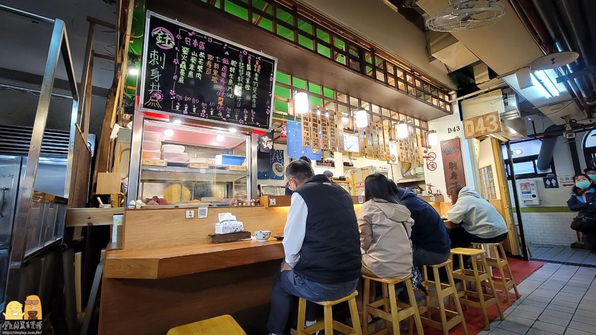
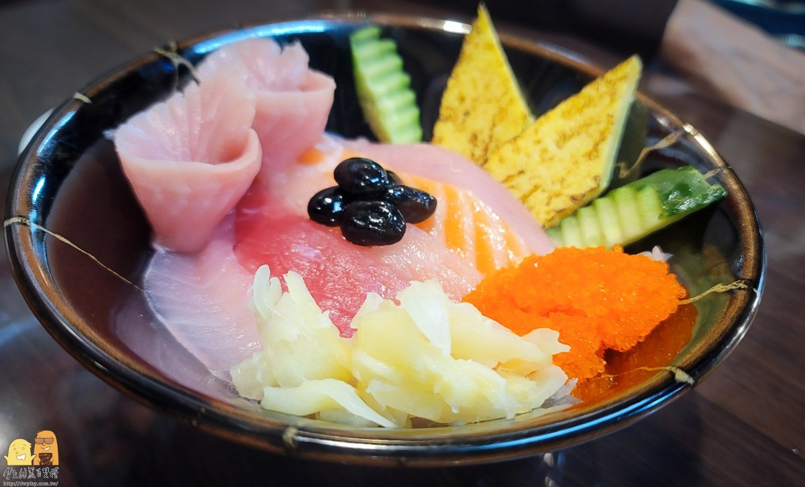
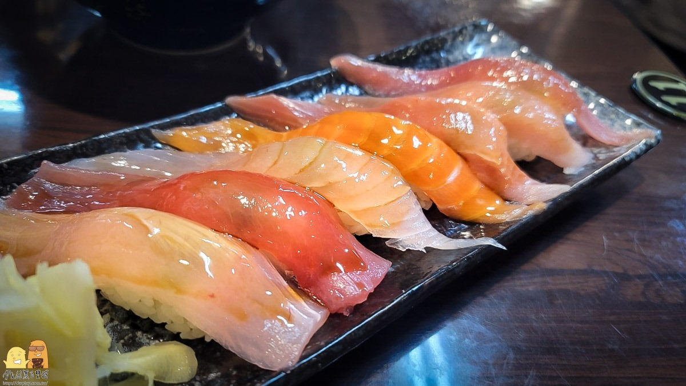
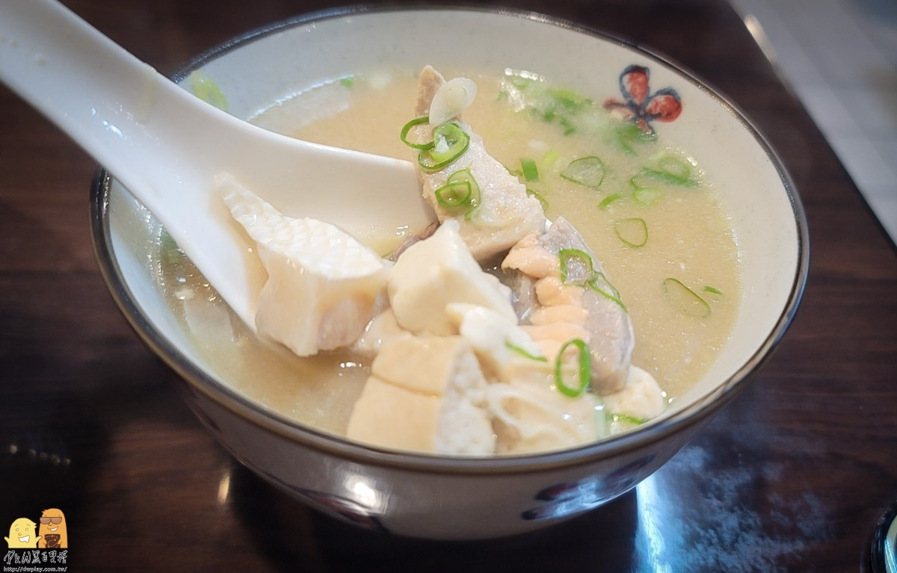

首頁
草莓季手搖飲
奧瑪烘焙
心得

鈺 刺身丼
「鈺 刺身丼」在市場的幾間握壽司店內，算是環境最乾淨的一間。
位於市場２樓D43攤位，比較角落的位置，要稍微找一下。平日中午就人潮不斷，必須得排隊才吃得到，是基隆內行人才知道的在地美食。
店內魚貨品質都滿好的，很難相信，是隱藏在市場內的美味。餐廳外觀看起來，就像是日式料理店一樣乾淨，吃完讓人大呼過癮。

綜合刺身丼飯塞滿７塊生魚片
點１份綜合刺身丼飯、握壽司和１碗味噌湯，加起來不用400元，真的很划算。
同樣分量在台北日式料理店，一定超過500元。
綜合刺身生魚片丼飯210元，有鮭魚、旗魚、紅柑等７塊生魚片，還搭配蝦卵、玉子燒跟黑豆等配料，以價位來說誠意十足。
每片生魚片都滿大塊，肉質吃起來相當甜。尤其是鮭魚滿溢出來的油脂，咬起來也非常滑嫩可口；紅魽無明顯的腥味，肉質非常彈潤。

海鮮控直接衝肥美握壽司
鈺刺身丼的握壽司做法，偏向日本關西的吃法，在魚肉上面抹點醬油，所以每１片生魚片都帶點光澤，握壽司內也會加一些芥末。
握壽司的CP值，高於綜合刺身丼飯，因為握壽司生魚片的大小跟厚度，基本上跟刺身丼飯相當，生魚片種類也是一樣，價格卻便宜近50元。
如果想吃點生魚片，點握壽司絕對不會錯！

味噌湯吃得到鮭魚肉
味噌湯真的沒啥好說的，就是CP值很高。
裡面有豆腐、蔥花，還有一堆鮭魚肉塊。湯頭喝起來清爽甘甜，鮭魚肉塊還帶有魚皮，這個真的讚。
靠近崁仔頂魚市附近，藏身仁愛市場裡的「鈺刺身丼」，真的是在地人才知道。
唯一缺點是只營業到下午３點，非本地的上班族想吃，只能平日來吃，或假日早點來排了！